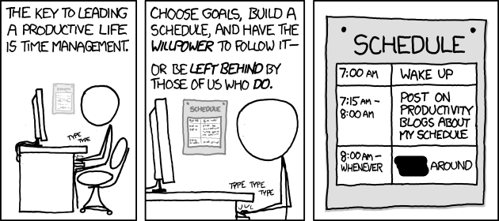
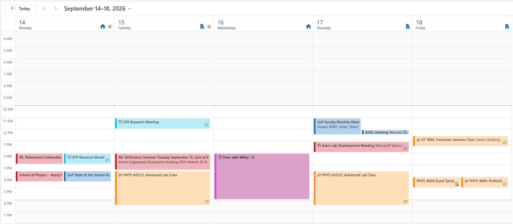

GT 1000 · Lecture 3
2026-09-11
How are things going for you during your first few weeks at Georgia Tech?
A few things to get you started:

xkcd #874 “Time Management” · CC BY-NC 2.5 · (edited)
Full disclosure: I didn’t start this slide deck until last night.
I probably need to hear some of the stuff we’re going to discuss as well.
Reminder: Your résumé is due tonight, Sept. 11, 11:59 PM ET.
The Fall 2026 All Majors Career Fair is Sept. 14–15.
High school scheduled your time for you. College does not.
Discuss: Where is your unstructured time actually going right now?
If you get only one of these right, make it this one.
Discuss: What time did you go to sleep last night? What time did you go to sleep the night before?
Two different methods. Use both.
What has to happen.
Everything goes in one place: assignments, emails, errands. If it’s only in your head, it will surface at 1 AM.
When it will happen.
If a task has no time attached to it, it is a wish. Put the work on the calendar next to the class that assigned it.
What do you use? Paper, phone, online calendar, nothing? The tool does not matter; checking it daily does.

One hour with a tutor beats three alone with a textbook you are not absorbing. All of this is free and already paid for by your tuition.
| Resource | What it is |
|---|---|
| 1-to-1 Knack Tutoring | Book a GT student who already aced your course |
| Drop-In Tutoring | Walk into Clough, no appointment needed |
| Peer-Led Undergraduate Study (PLUS) | Weekly small-group sessions for historically hard courses |
Even more resources: success.gatech.edu/tutoring
Go before you are behind. Tutoring is not remediation.
Free time you planned is restorative. Free time you stole from work is not.
Pick one strategy from today. Not five.
GT 1000 · Fall 2026 · Section D03 · Georgia Institute of Technology